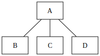
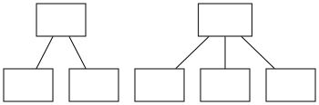
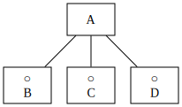
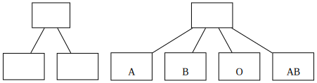
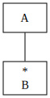
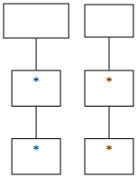
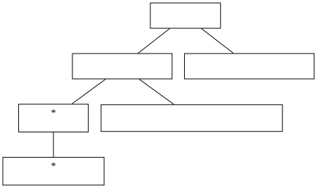
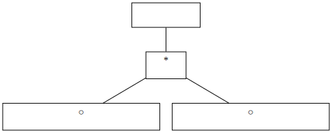
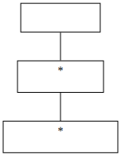

<!doctype html>
<html lang="en">
	<head>
		<meta charset="utf-8">
		<meta name="viewport" content="width=device-width, initial-scale=1.0, maximum-scale=1.0, user-scalable=no">

		<title>reveal.js</title>

		<link rel="stylesheet" href="dist/reset.css">
		<link rel="stylesheet" href="dist/reveal.css">
		<link rel="stylesheet" href="dist/theme/black.css">

		<!-- Theme used for syntax highlighted code -->
		<link rel="stylesheet" href="plugin/highlight/monokai.css">
	</head>
	<body>
		<div class="reveal">
			<div class="slides">
				<section data-markdown=""
				data-separator="^\n---$"
				data-separator-vertical="^\n>>>$">
				<script type="text/template">
### 読みやすいプログラムを書くには(2)
株式会社 ボールド 技術部 鳥海秀一


---
### 読みやすさの観点について
- - -
* 一口に読みやすいプログラムといってもそこには様々な観点が存在する
* プログラムが適切な部品に分割されていることも重要な観点だがそれは今は論じない
* ここではロジックフローが読みやすいかという観点のみを考察の対象とする

---
### 構造化プログラミングについて
- - -
* ロジックフローの読みやすさは、構造化プログラミングで散々に議論されている
* 構造化プログラミングの教えでは、goto文を使わず、順次・選択・反復の3つの制御構造を使えば、読みやすいプログラムができるとされている

---
### 前回の結論
- - -
* 構造化プログラムの教えに則っただけでは読みやすいプログラムは作成できない
* ３つの制御構造をどのように組み合わせると良いのかを検討する必要がある

---
### ジャクソンの構造化プログラミング
- - -
* M.A.ジャクソンは、プログラムの設計では[データ構造を中心に考えるべき](./img/1.4.data_structure.jpg)と主張した（書籍「[構造的プログラム設計の原理](./img/PrinciplesOfProgramDesign.jpg)」]）
* ジャクソンはデータ構造からプログラム構造を導出する方法「ジャクソンの構造化プログラミング」(JSP)を提案した
* JPS法ではデータ構造の分析に「ジャクソン構造図」を使用する

---
### DATA構造からPG構造を導出すべき理由
- - -
* データ構造は我々が現実世界をどのように理解しているかを示している
* プログラムは入力データを出力データに変換する変換装置であり、その両方から影響を受ける
* 入出力のデータ構造からプログラム構造を導出すると我々の世界の理解の仕方がプログラムに反映される

---
### ジャクソン構造図とは
- - -
* 次の3つの基本構造でデータを図示する記法
	* 順次
	* 選択
	* 反復

---
### ジャクソン構造図による順次の表現
- - -
<br>
### AはBとCとDからなる

---
### 順次の表現の例
- - -
<br>

---
### ジャクソン構造図による選択の表現
- - -
<br>
### AはBかCかDからなる

---
### 選択の表現の例
- - -
<br>

---
### ジャクソン構造図による反復の表現
- - -
<br>
### Aは複数のBからなる

---
### 反復の表現の例
- - -
<br>

---
### ジャクソン法の手順
- - -
* 入力データの構造図を描画する
* 出力データの構造図を描画する
* 入出力のデータの対応関係から上記２つを統合し、新たな構造図を導出する
* 導出した構造上に必要なコード片を配置しプログラムを完成させる

---
### 例題の出力ファイルの表現の例
- - -
<br>

---
### 例題の入力ファイルの表現の例
- - -
<br>
<p class="fragment">これだと出力の表現と整合しない</p>

---
### 例題の入力ファイルの表現の例
- - -
<br>
<p class="fragment">これだと出力の表現と整合する</p>

---
### 統合した構造図の例
- - -
<br>

---
### ジャクソン法を利用するときの注意点
- - -
* 入出力の２つのデータ構造が整合する構造を見つけようと努力すること
* 初めから完璧なデータ構造図を描こうとしないこと
* データ構造から導き出したプログラム構造は概要として利用すること

---
### 読みやすいプログラムの作成法
- - -
* プログラムを作成する前に入出力のデータ構造を分析する
* 入出力のデータ構造が整合しない場合は、一度に変換しようとせず、中間出力（入力）を想定する
* データ構造とプログラム構造の間を行き来して両方を改善していく

---
### 演習問題1
- - -
* <a href="./text/products_services.txt" download>products_services.txt</a>ファイルを読み込み、標準出力に[次の出力](./text/amount_products_services.txt)を出力するプログラムを作成せよ

---
### 演習問題2
- - -
* 浮動小数点数のジャクソン構造図を書いてみよ

---
### ご清聴ありがとうございました

</script>
				</section>
</div>
		</div>

		<script src="dist/reveal.js"></script>
		<script src="plugin/notes/notes.js"></script>
		<script src="plugin/markdown/markdown.js"></script>
		<script src="plugin/highlight/highlight.js"></script>
		<script>
			// More info about initialization & config:
			// - https://revealjs.com/initialization/
			// - https://revealjs.com/config/
			Reveal.initialize({
				hash: true,

				// Learn about plugins: https://revealjs.com/plugins/
				plugins: [ RevealMarkdown, RevealHighlight, RevealNotes ]
			});
		</script>
	</body>
</html>
